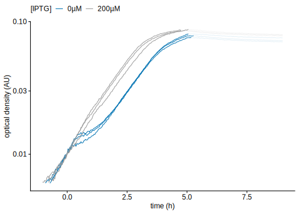
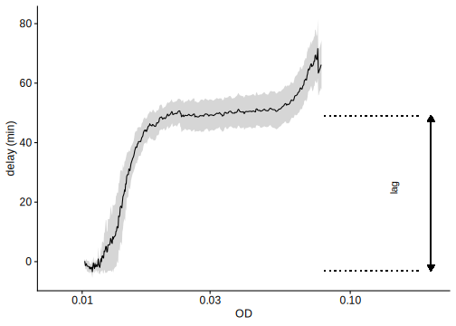
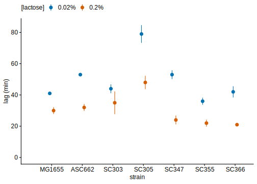

Diauxic lag in population growth curves
Thomas Julou
09 October, 2020
In order to study the diauxie at th epopulation level, we measured growth curves for several strains in different mixture of glucose + lactose. Since we want to monitor the lag when cells are far from stationary phase (to avoid interfering with the lag itself), we keep the glucose concentration low (0.05%).
Let’s plot the growth curves for all strains (columns) in all conditions (rows):
read_csv(here('./data/Julou2020_lacInduction_DiauxieGrowthCurves.csv.gz')) %>% as_tibble() %>%
filter(!discard) %>%
filter(time>time_blank) %>%
group_by(date, well) %>%
mutate(time_expt=time, time=time-min(time[od>1e-2]),
# fit=row_number()<which.max(od),
# fit=ifelse(glucose>=0.05 & lactose==0.02, fit&time<10*3600, fit),
) %>%
filter(od > 6e-3) %>%
ggplot(aes(time/3600, od)) +
facet_grid(lactose+iptg~strain, labeller = labeller(.rows = label_both, .cols = label_value)) +
geom_point(stroke = 0, size = 0.5, alpha=.25) +
xlim(NA, 10) +
scale_y_log10() +
NULL
Diauxic lag estimation
In order to measure the lag, a precise reference growth curve can be obtained for a given glucose + lactose mixture by using the same nutrient concentration and supplementing cells with IPTG so that the lac operon is expressed at all time. The rationale is that the diauxic lag comes mostly from the triggering of the positive feedback and the expression of the first Lac proteins while the kinetics of lactose import, conversion to allolactose and binding to LacI are comparatively fast.
In order to measure the lag, we compute the delay relative to the growth curve with IPTG induction.
(myplots[['diauxie_gcs']] <-
read_csv(here('./data/Julou2020_lacInduction_DiauxieGrowthCurves.csv.gz')) %>% as_tibble() %>%
filter(!discard) %>%
filter(strain %in% c("ASC662"), lactose==0.02) %>%
filter(time>time_blank) %>%
group_by(date, well) %>%
mutate(time_expt=time, time=time-min(time[od>1e-2]),
fit=row_number()<which.max(od),
fit=ifelse(glucose>=0.05 & lactose==0.02, fit&time<10*3600, fit),
) %>% filter(od > 6e-3) %>%
ggplot(aes(time/3600, od, group=interaction(date, well))) +
geom_line(aes(alpha=fit, col=paste0(iptg, 'µM'))) +
scale_y_log10() +
scale_x_continuous(scales::pretty_breaks(n = 4)) +
xlim(NA, 9) +
scale_color_manual(values = c('0µM'=ggCustomTJ::qual_cols[1], '200µM'='gray60')) +
# scale_color_brewer(palette="Set1") +
guides(alpha='none') +
theme(legend.position = 'top') +
labs(x="time (h)", y="optical density (AU)", col='[IPTG]') +
NULL)
(myplots[['diauxie_delay']] <-
# mygcs %>%
# filter(!discard) %>%
# filter(strain %in% c("ASC662"), glucose==0.005, lactose==0.02) %>%
# filter(iptg %in% c(0, 200) & lactose %in% c(0.02, 0.2) & glucose>0) %>%
read_csv(here('./data/Julou2020_lacInduction_DiauxieGrowthCurves.csv.gz')) %>% as_tibble() %>%
filter(!discard) %>%
filter(strain %in% c("ASC662"), lactose==0.02) %>%
filter(time>time_blank) %>%
group_by(glucose, lactose, iptg, date, well) %>%
mutate(time_expt=time, time=time-min(time[od>1e-2]),
fit=row_number()<which.max(od),
fit=ifelse(glucose>=0.05 & lactose==0.02, fit&time<10*3600, fit)) %>%
nest() %>%
mutate(
approx = map(data, function(.df) filter(.df, fit, od>0) %>% with(approxfun(time, log(od)))),
approx_inv = map(approx, ~approxfun(.x(seq(0, 2e5, 1)), seq(0, 2e5, 1), ties=min)),
pred_approx = map(approx_inv, ~tibble(od=exp(seq(log(1e-2), log(1), length.out = 1000)) ) %>%
mutate(time=.x(log(od))) ),
) %>%
unnest(pred_approx) %>%
group_by(iptg, od) %>%
summarise(time_n = sum(!is.na(time)), time_m = mean(time, na.rm=TRUE),
time_se= (if (time_n==1) Inf else sd(time, na.rm=TRUE)/sqrt(time_n)) ) %>%
select(-time_n) %>%
pivot_wider(names_from = iptg, values_from = c(time_m, time_se)) %>%
mutate(delay_m=time_m_0-time_m_200, delay_se=sqrt(time_se_200^2+time_se_0^2)) %>%
filter(is.finite(delay_se)) %>%
ggplot(aes(od, delay_m/60)) +
# geom_hline(aes(yintercept=delay, col=factor(lactose)), lty='dotted', data=mylags) +
geom_smooth(aes(ymin=(delay_m-delay_se)/60, ymax=(delay_m+delay_se)/60), size=.5, col='black', stat='identity') +
scale_x_log10(limits=c(8e-3, NA)) +
labs(x='OD', y="delay (min)") +
NULL) +
geom_segment(aes(x=.08, xend=.18, y=-3, yend=-3), data=NULL, lty='dotted') +
geom_segment(aes(x=.08, xend=.18, y=49, yend=49), data=NULL, lty='dotted') +
geom_segment(aes(x=.2, xend=.2, y=-3, yend=49), data=NULL,
arrow=arrow(ends="both", type='closed', length = unit(0.1, "inches"))) +
annotate('text', .15, 25, label='lag', hjust=.5, vjust=0, angle=90) +
# scale_x_log10(limits=c(8e-3, .2)) +
NULL
Diauxic lag at low/high glucose
We then compare the lags with using two different lactose concentration for different strains spanning E. coli diversity:
(myplots[['diauxie_gcs_all']] <-
# mygcs %>%
# filter(!discard) %>%
# filter(!strain %in% c("B4")) %>%
# filter(iptg %in% c(0, 200) & lactose %in% c(0.02, 0.2) & glucose==0.005) %>%
# filter(time>time_blank) %>%
# group_by(date, well) %>%
# mutate(time_expt=time, time=time-min(time[od>1e-2]),
# fit=row_number()<which.max(od),
# fit=ifelse(glucose>=0.05 & lactose==0.02, fit&time<10*3600, fit),
# fit=ifelse(time>15*3600, FALSE, fit),
# ) %>%
read_csv(here('./data/Julou2020_lacInduction_DiauxieGrowthCurves.csv.gz')) %>% as_tibble() %>%
filter(!discard) %>%
filter(time>time_blank) %>%
group_by(date, well) %>%
mutate(time_expt=time, time=time-min(time[od>1e-2]),
fit=row_number()<which.max(od),
fit=ifelse(glucose>=0.05 & lactose==0.02, fit&time<10*3600, fit),
fit=ifelse(time>15*3600, FALSE, fit),
) %>%
filter(od > 6e-3) %>%
ungroup() %>%
mutate(strain=fct_recode(strain, 'SC303'='A1', 'SC305'='A2', 'SC330'='B4',
'SC347'='C10', 'SC355'='D6', 'SC366'='E6'),
strain=fct_relevel(strain, "MG1655", "ASC662"),
) %>%
filter(! (lactose == 0.02 & time > 8*3600),
! (lactose == 0.2 & time > 14*3600),) %>%
(function(.df)
ggplot(filter(.df, iptg==0), aes(time/3600, od, group=interaction(date, well))) +
facet_grid(strain~lactose, scales = 'free_x', space='free_x',
labeller = labeller(.cols=function(.l) paste('[lactose] = ', .l, '%'))) +
geom_line(aes(alpha=fit, col=paste0(lactose, ' %'))) +
geom_line(aes(alpha=fit), col='gray60', data=filter(.df, iptg==200)) +
scale_x_continuous(breaks=seq(0, 20, 4)) +
scale_y_log10() +
guides(alpha='none') +
theme(legend.position = 'top') +
labs(x="time (h)", y="optical density (AU)", col='[IPTG]') +
NULL)
)
For each strain and condition, we compute the delay relative to the growth curve with IPTG induction in order to measure the lag:
read_csv(here('./data/Julou2020_lacInduction_DiauxieGrowthCurves.csv.gz')) %>% as_tibble() %>%
filter(!discard) %>%
filter(time>time_blank) %>%
group_by(strain, glucose, lactose, iptg, date, well) %>%
mutate(time_expt=time, time=time-min(time[od>1e-2]),
fit=row_number()<which.max(od),
fit=ifelse(glucose>=0.05 & lactose==0.02, fit&time<10*3600, fit),
fit=ifelse(time>15*3600, FALSE, fit),
) %>%
nest() %>%
mutate(
approx = map(data, function(.df) filter(.df, fit, od>0) %>% with(approxfun(time, log(od)))),
approx_inv = map(approx, ~approxfun(.x(seq(0, 2e5, 1)), seq(0, 2e5, 1), ties=min)),
pred_approx = map(approx_inv, ~tibble(od=exp(seq(log(1e-2), log(1), length.out = 1000)) ) %>%
mutate(time=.x(log(od))) ),
) %>%
unnest(pred_approx) %>%
group_by(strain, glucose, lactose, iptg, od) %>%
summarise(time_n = sum(!is.na(time)), time_m = mean(time, na.rm=TRUE),
time_se= (if (time_n==1) Inf else sd(time, na.rm=TRUE)/sqrt(time_n)) ) %>%
select(-time_n) %>%
# ggplot(aes(od, time_m/3600)) +
# facet_grid(lactose~glucose) +
# geom_smooth(aes(ymin=(time_m-time_se)/3600, ymax=(time_m+time_se)/3600, col=factor(iptg)), size=.5, stat='identity') +
# scale_x_log10(limits=c(8e-3, NA)) +
# scale_color_brewer(palette="Set1") +
# labs(y="time (h)")
pivot_wider(names_from = iptg, values_from = c(time_m, time_se)) %>%
mutate(delay_m=time_m_0-time_m_200, delay_se=sqrt(time_se_200^2+time_se_0^2)) %>%
ungroup() %>% mutate(strain=factor(strain)) %>% filter(!is.na(glucose)) %>%
ggplot(aes(od, delay_m/60, col=factor(lactose))) +
facet_grid(strain~lactose, label=label_both) +
# geom_hline(aes(yintercept=delays, col=factor(lactose)), lty='dotted', data=mylags2) +
geom_smooth(aes(ymin=(delay_m-delay_se)/60, ymax=(delay_m+delay_se)/60), size=.5, stat='identity') +
scale_x_log10(limits=c(8e-3, 0.5)) +
scale_y_continuous(minor_breaks = seq(-200, 500, 10)) +
coord_cartesian(ylim=c(-20, 80)) +
theme(legend.position = 'top') +
labs(y="delay (min)", col="[lactose]")# ggsave('delays_SC1.pdf', width=12, height=8.5)From delay plots, we measured the lags manually:
(myplots[['diauxie_lags']] <-
tribble(
# `delays` is the delay at the "start" of the lag (i.e. when growth curves with and without IPTG start to separate)
# `delayp` is the delay at the "plateau"
# errors are measured based on the delay standard errors
~lactose, ~strain, ~delays, ~delays_err, ~delayp, ~delayp_err,
0.02, "MG1655", 0, 0, 41, 1,
0.2, "MG1655", 4, 1, 34, 2,
0.02, "ASC662", 0, 0, 53, 1,
0.2, "ASC662", 0, 1, 32, 2,
0.02, "A1", 5, 2, 49, 2,
0.2, "A1", 2, 2, 37, 7,
0.02, "A2", 4, 4, 83, 4,
0.2, "A2", 5, 3, 53, 3,
0.02, "C10", 3, 2, 56, 2,
0.2, "C10", 10, 2, 34, 2,
0.02, "D6", 1, 1, 37, 2,
0.2, "D6", 2, 2, 24, 1,
0.02, "E6", 0, 2, 42, 3,
0.2, "E6", 0, 0, 21, 1,
) %>%
mutate(glucose=0.005,
lag=delayp-delays, lag_err=sqrt(delayp_err^2+delays_err^2),
strain=fct_relevel(factor(strain), "MG1655", "ASC662"),
strain=fct_recode(strain, 'SC303'='A1', 'SC305'='A2', 'SC330'='B4',
'SC347'='C10', 'SC355'='D6', 'SC366'='E6')) %>%
ggplot(aes(strain, lag, col=paste0(lactose, "%"))) +
# geom_point() +
geom_pointrange(aes(ymin=lag-lag_err, ymax=lag+lag_err),
position=position_dodge(width = .25)) +
# scale_color_brewer(palette="Set1") +
expand_limits(x=0, y=0) +
labs(y="lag (min)", col="[lactose]") +
theme(legend.position = 'top') +
NULL )
Controls
For lab strains only, we performed additional control experiments to disentangle the effect of lactose before and after glucose exhaustion (aka the “switch”), by taking cells from a given mixture of glucose + lactose and transfering them to another one:
As a proxy for the population lag, we can measure the time taken to increase by 0.001 in OD (approx. 10% increase) after the start. NB: this is the smallest OD increment for which the estimation is stable; with smaller increment it is messed up by the fact that OD decreases at the start in most cases.
The lag decrease in each panel corresponds to the effect of the lactose availability before the switch i.e. the fraction of cells with long lags decrease; the decrease from the left to the right panel corresponds to the effect of lactose concentration after the switch i.e. how the import gets faster for higher lactose concentrations. These two effetcs seem to be of similar magnitude.
(myplots[['diauxie_wash_ctrl']] <-
read_csv(here('./data/Julou2020_lacInduction_DiauxieGrowthCurves_WashCtrl.csv.gz')) %>% as_tibble() %>%
group_by(date, row, col, lac_before, lac_after) %>%
nest() %>% ungroup() %>%
mutate(date=as.character(date),
od_min = map_dbl(data, ~mean(.$od[between(.$time, 15*60, 45*60)])),
t2 = map2_dbl(data, od_min, ~min(.x$time[.x$od > 2 * .y])),
t_min = map2_dbl(data, od_min, ~min(.x$time[.x$time >15*60 & .x$od > .y + 1e-3])),
) %>%
filter(t_min > 17*60) %>% # remove one case where estimation failed (before the end of the decrease at the start)
ggplot(aes(factor(lac_before), t_min/60)) +
facet_grid(~lac_after, scales='free_y',
labeller=as_labeller(paste0("[lactose] after the switch: ", c(0.02, 0.2), "%") %>% set_names(c(0.02, 0.2)))) +
geom_jitter(aes(shape=date), col='gray80', width=.1) +
stat_summary(aes(col=paste0(lac_after, "%")), fun.data=mean_se) +
expand_limits(y=0) +
labs(x='[lactose] before the switch (%)', y='population lag (min)', col='[lactose] after the switch') +
guides(shape='none') +
NULL) +
# theme(legend.position = 'top', strip.background = element_blank(), strip.text = element_blank()) +
NULL